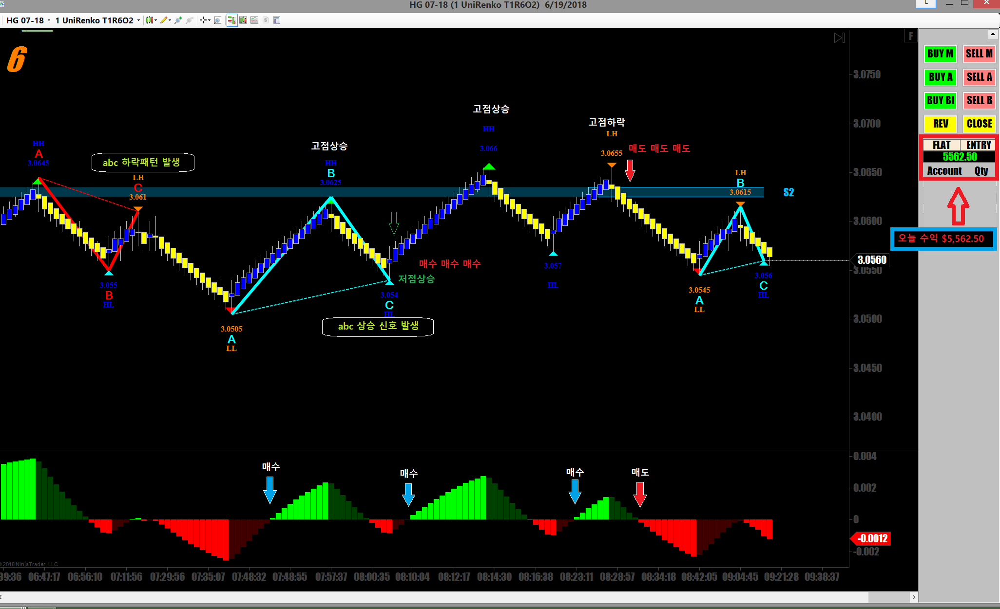
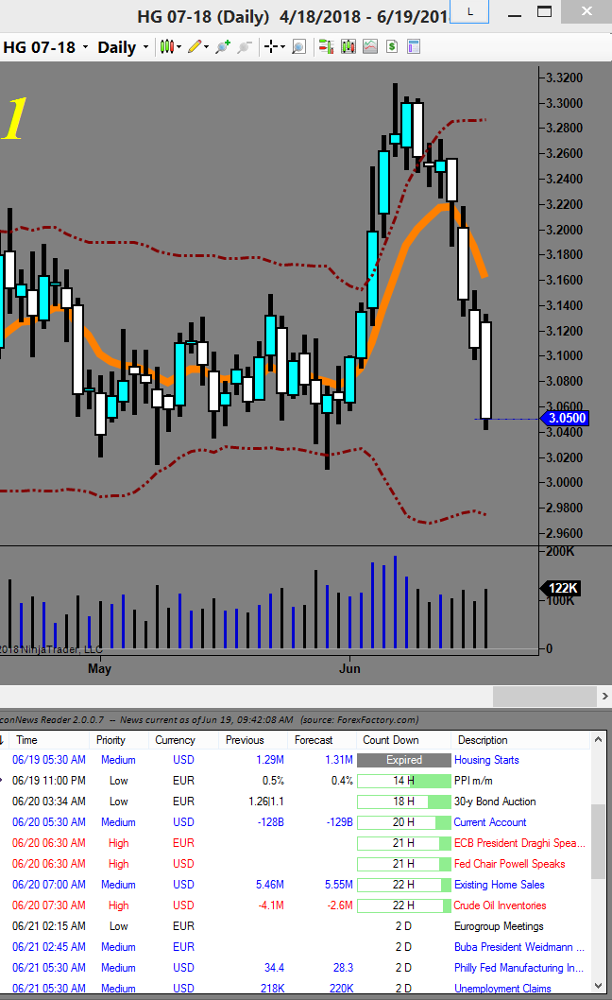

[매매일지] 오늘 구리선물 매매 요약
글쓴이 : fjejetg 날짜 : 2018-06-20 (수) 01:39 조회 : 1464

오늘도 구리를 매매했는데 장이 크게 움직여줘서 좋은 수익이 났습니다
선물로 스캘핑을 하는 저같은 경우
당일 매매를 결정하는데 중요한것이 일봉챠트와 뉴스입니다
일봉상으로 장이 크게 움직일 상황인지 조용한 날인지 대충 보면 감이 잡힙니다
(중요 지지/저항)이 돌파된다든지 봉챠트 패턴상 중요한 신호가 나왔다든지..
매일아침 매매시작전에 일봉챠트가 보여주는 패턴을 잘 살펴봐야 합니다

그후에 그날의 장외재료를 훓어봅니다
어제 오늘은 역시 트럼프의 무역전쟁 도발로 인해 전체장이 하락압력을 받고있고 Metal들도 떡락중인지라
방향 잡기가 쉬웠습니다
샹하이 마켓 오픈하자마자 큰 움직임들이 계속 나와서 매매하기 아주 쉬웠던 날입니다
이렇듯 알기쉬운 큰 재료가 있는날은 매매물량을 올려서 과감하게 먹어야하고
별 재료가 없는 조용한날은 움직임이 작기 때문에 조금 가다가 홱 돌아서기 무한반복인 경우가 많아서
미국 국채선물이나 다른 종목을 살펴보는게 좋습니다
단타매매는 정글의 사자와 같습니다
장세에 따라 먹는날이 있고 굶는 날이 있습니다
먹을 수 있을때 최대한 많이 먹어놔야 합니다.
None of my business !!
fjejetg님이 작성하신 다른 글
[2018-06-24] 비트코인 (10)
[2018-06-24] 실버 선물 매매 요약 (10)
[2018-06-19] 구리선물 매매 (10)
시공속으로 2018-06-20 (수) 02:10
시간대를 보니 한국이 아니군요.
포렉스 팩토리는 빠진게 많아서 잘안보는데.
글쓴이 2018-06-20 (수) 02:24
네 맞습니다
여긴 미국입니다.
미국 증권사 선물매매팀에서 오래 일하다 은퇴해서 지금은 집에서 전업으로 선물매매하고 있습니다
위 챠트중에 오늘의 경제지표를 자동으로 알려주는 프로그램은 forexfactory.com을 디폴트로 해서
무료로 자동 업데이트를 해주는거라 깔아놓고 쓰고 있습니다
발표 5분전에 팝업창이 뜨면서 알려주니 저같이 잘까먹는 사람에겐 편리해서 그냥 씁니다
무엇보다도 공짜라서..ㅋ
dollar 2018-06-20 (수) 19:19
좋은 정보 감사합니다.
무엇보다 노하우의 엑기스가 렌코와 이평선 단 2개가 전부라는게 인상적이네요
차트를 보다가 두가지 궁금한 점이 있어서 질문 드립니다.
덕분에 유니렌코를 처음 알게 되었는데요..
닌자는 전혀 모르기 때문에 메타용 소스를 찾아 살펴 보긴 했는데 아직 감이 잘 안잡히네요
기존 렌코대신 유니렌코를 선택하신 이유라도?
두번째로
차트를 보니까 시스템으로 작성하기 좋아 보여서 데모에서 돌려보려고 하는데요
작성하다 보니까 진입시점은 명료한데, 청산시점은 어떻게 잡으시는 지요?
추가로 앞서 올리신 게시글에서 이평선은 지수이평선 같아 보이는데 맞나요?
글쓴이 2018-06-20 (수) 20:24
위에 챠트는 유니렌코에 Heiken-Ahi 를 함께 넣은겁니다. 그럴 경우 일반 분챠트가 그려주는 쓸데없는 Noise를 생략하고 실제 흐름만 보여주기 때문에 매매시 불필요한 헛손질을 막아줍니다.
청산시점은
상승시 - 직전캔들 상단
하락시 - 직전캔들 하단에 손절주문을 넣고 계속 따라붙습니다
그러다가 선물이 반대로 방향을 틀면 손절에 걸려 청산합니다
이평선은 챠트조합마다 잘맞는 이평선이 다 다른데요
구리선물의 경우 50EMA를 쓰고있는데 위쪽에 있으면 상승으로만 매매하고
아래쪽일 경우 하락으로만 매매합니다
하지만 50 EMA는 제가 쓰는 유니렌코에서 적용되는거고
일반 분봉이나 틱챠트에서는 달라질겁니다
저같은 경우 실제 매매방향을 잡는 기준은 구리선물의 경우 1800틱 챠트에 10일 EMA를 씁니다
dollar 삭제 수정 2018-06-20 (수) 21:08
여러가지로 힌트를 주셔서 감사합니다..
서울마님 2018-06-20 (수) 19:49
주식보다 선물이 더 쉽다는 말을 하는 사람을 봤는데 어떻게 생각하시나요? 국선이요
글쓴이 2018-06-20 (수) 20:32
어떤식의 매매를 하느냐에 따라 다르겠지요
단타인지 스윙인지 중장기투자인지에 따라 다르겠습니다만
주식으로 매매를 할 경우
각개주식 분석하고 쎅터 대장주 분석하고
전체증시 분석하고
단타의 경우 그 수많은 주식중에 재료가 나온 주식을 스크린하는일이
시간이 보통 오래걸리는 작업이 아닙니다
선물의 경우 아침에 일어나서 커피 한잔 마시면서
일봉챠트 한번보고 30초
경제뉴스 한번 읽고 1분 그게 끝입니다
매일 매매하는 선물이 정해져 있어서
다른거 신경 쓸 필요가 없고 선물마다 크게 움직이는 시간대가 정해져 있어서
그때만 딱 매매하면 됩니다
선물매매는 기술적 분석만 잘할줄알면
큰돈을 벌 수 있습니다
세력이니 외국인이니 기관이니 이런거 신경 쓸 필요도 없고
고수들의 진검승부처이기 때문에 챠트만 제대로 볼 줄 알면 됩니다
기술적분석에 자신있으면 선물이 훨씬 쉽습니다
서울마님 2018-06-21 (목) 19:44
대여계좌는 어떻게 생각하시나요? 불법인지 아닌지 모호한데 아프리카tv에서 소액 가지고도
얼마든지 할수있다고 하며서 하라고 하는데 사실 대여계좌가 정석은 아니잖아요?
다만 그사람이 아프리카에서 꽤오랫동안 했고 유명한 사람이라서 거짓말이라고 느껴지지는
않아요. 거짓말이라면 진작에 문제가될텐데 아직도 하는거보면 대여계좌라고 무조건 나쁜것만 같지는 않고 그런데 어떻게 보시는지요? 국선이요
글쓴이 2018-06-21 (목) 21:17
미국에도 소규모 증권사들은 5백만원만내면 계좌를 오픈해주고 돈을 빌려줘서 거래하게 해줍니다만 (레버리지) 대부분 초보들이 많이 이용해서 그런가 몇달 못버티고 다 끝납니다
서울마님 2018-06-22 (금) 18:57
저는 속이거나 이런것만 아니면 생각해볼까해서요. 알겠습니다
시공속으로 2018-06-20 (수) 23:49
주식은 끌고가는 매매 아니면 단기는 귀찮아요.
진짜 잘하는 사람 아니면 생각보다 돈도 안되고.
크루드a 2018-06-23 (토) 16:23
한국에서도 미국트레이딩시스템 사용이가능한가요?ㅎㅎ
혹시 어떤거사용하시는지알수있을까요?
글쓴이 2018-06-24 (일) 02:23
한국법에 외국에 계좌를 오픈해서 매매하는게 금지되어 있다고 들었습니다
매매시스템은 닌자 트레이더라는 건데 한국에도 사용하시는 분들이 많습니다
프로들이나 한국기관들 펀드들중에 많은곳이 이미 Ninja Trader를 쓰고 있습니다
제 카페에서 소개해서 사용중이신분만 20명이 넘습니다
크루드a 2018-06-24 (일) 11:02
저도 쪽지로 카페 소개좀 해주실수있을까요?^^(쪽지 남겨볼꼐요^^)
에더마스크 2018-06-23 (토) 18:48
오일은 안하시나요?
글쓴이 2018-06-24 (일) 02:19
선물이 종류가 많습니다만 가능하면 돈벌기 쉬운 선물로 하는게 맞다고 봅니다
가장 돈벌기 쉬운 선물은 은(silver)고 그 다음이 구리라고 봅니다
크루드는 거래량이 많은탓에 기관들이 많이 들어와 질러대는 통에 매매가 쉽지 않습니다
구리가 쉬운 이유는 거래양이 적어서 큰손들이 설쳐대기 어려운 장세라 개미들이 많은 선물이고
그러다보니 기술적 분석대로 움직이는 경우가 많아 매매가 훨씬 쉽습니다
라인하르트 2018-06-23 (토) 19:30
미국에는 소득세는 어찌되나요?
글쓴이 2018-06-24 (일) 02:21
미국에서 소득세는 수입에 따라 12단계로 세율이 나눠져 있습니다
지금은 트럼프가 7단계로 줄여가고 있습니다
일년 최고 고액 납세율은 년수입 41만불 이상이면 39% 정도 됩니다
연수입 3만8천불 미만이면 세율이 12% 입니다